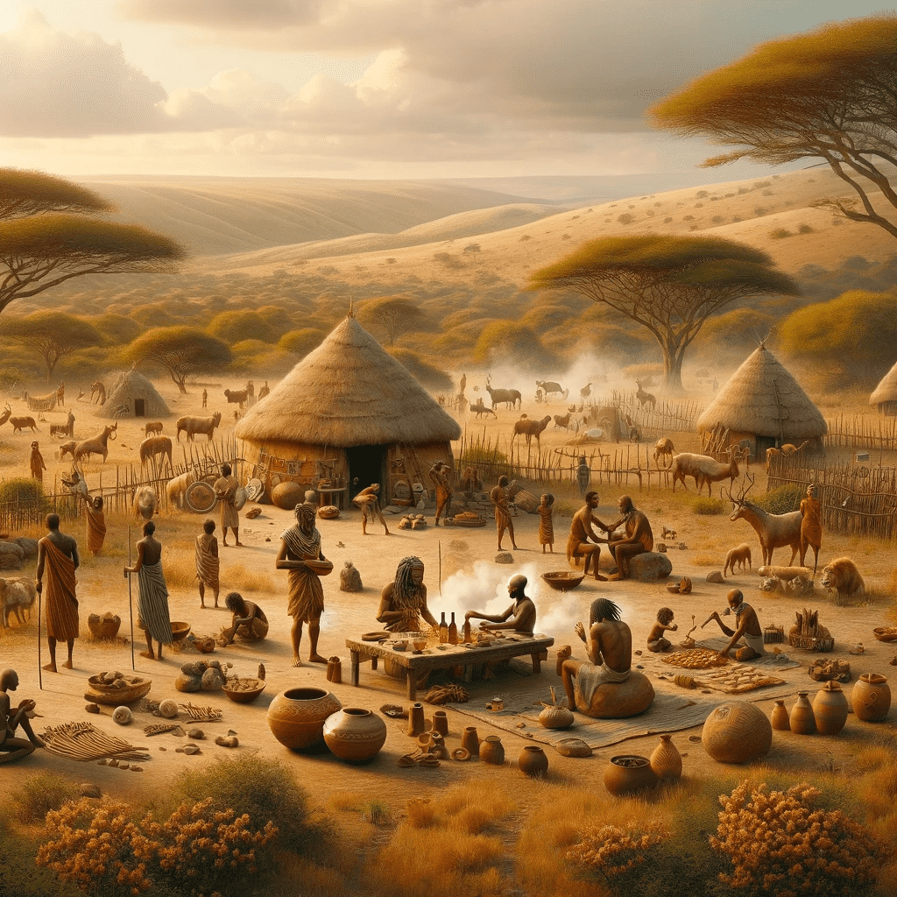
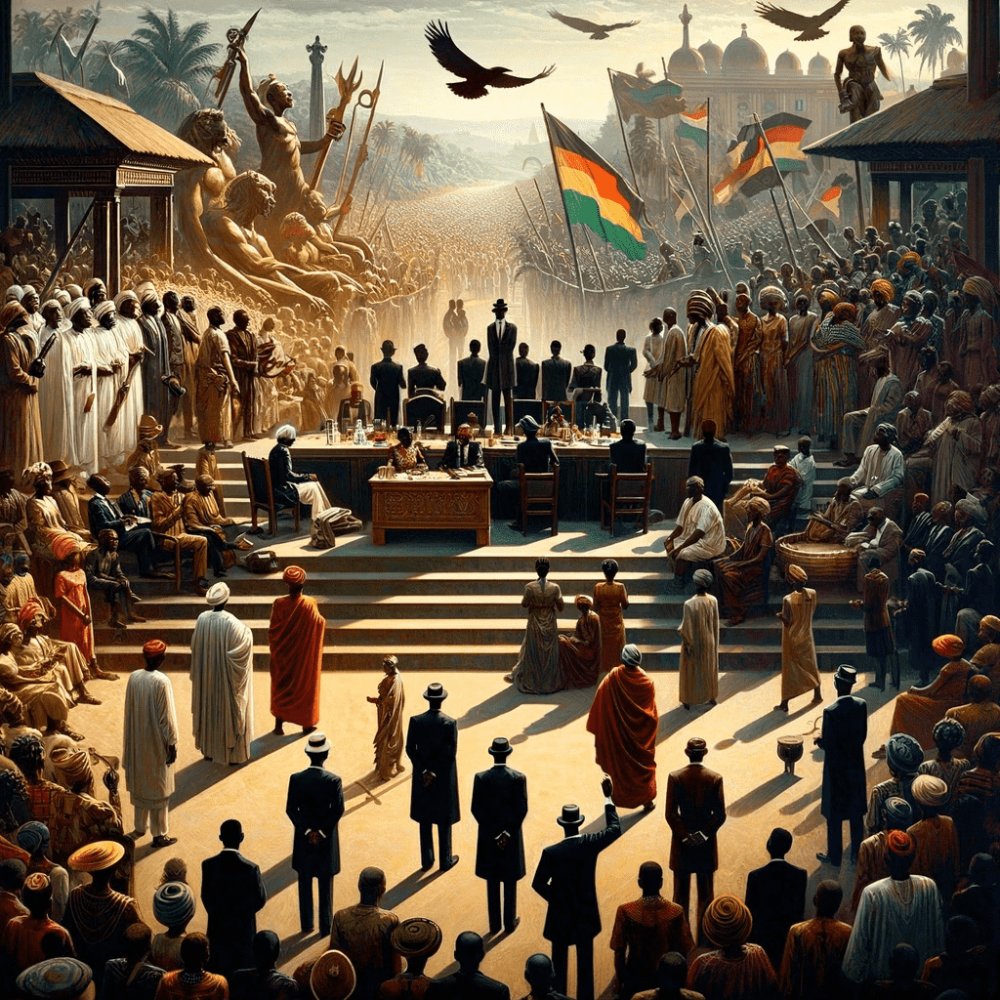
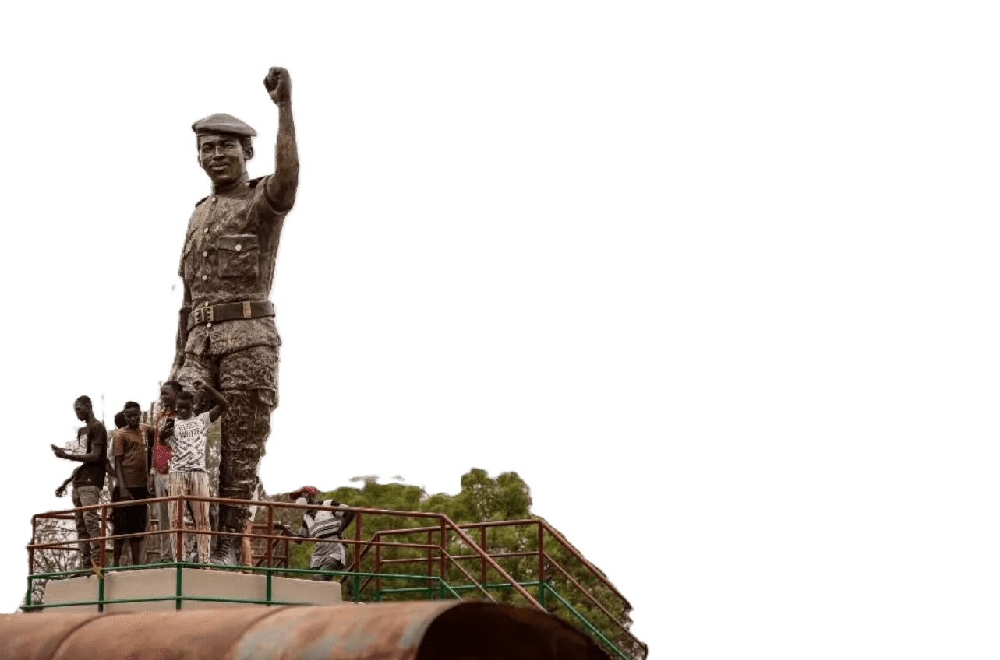
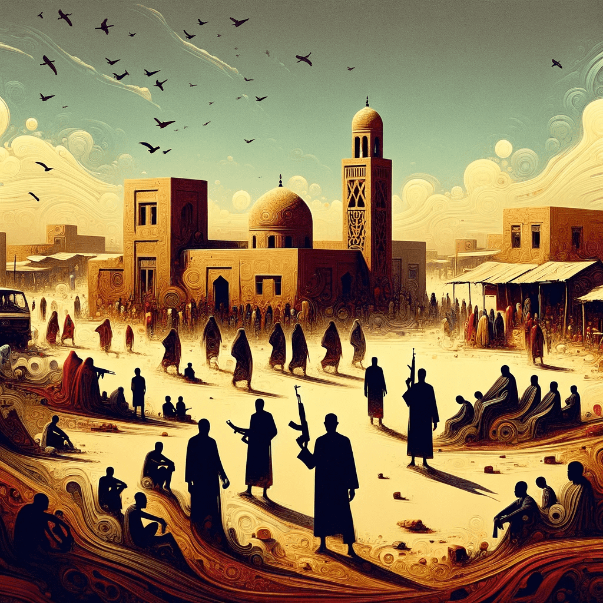

Writer's Comment: I've had the privilege of coming to politics from a comfortable home with a full belly. The same cannot be said of everyone. While it's tempting to regard moral ideas as the wellspring of progress, it's important to know that some people make choices within a landscape overdetermined by forces often larger than themselves. Accordingly, moral considerations are important reflections of a more immediate material reality. I argue that understanding religious militancy in Burkina Faso and how to reduce the harm it causes requires us to look at historical momentum built up by successive generations of peoples in a dance with their environment. By telling a story about how the Burkinabè people have come to be, I treat the changing material world with primacy. To acknowledge the world as 'becoming' instead of 'being' empowers us to make mistakes and grow from experience. Famed astrophysicist Carl Sagan said it best: 'If you wish to make a pie from scratch, you must first invent the universe.'
Instructor's Comment: Joseph is the kind of student that every professor loves having in class: he both knows the details of every page of assigned reading, and his mind is open enough to ask big picture questions that bring together a wide range of material. In the Contemporary African politics course where Joseph wrote this essay on the political history of Burkina Faso, he approached each session with energy, curiosity, and skepticism. His essay brings together oral history, economics research based on sophisticated statistical methods, and political commentary on recent events to argue that political instability since independence in Burkina Faso must be understood in the context of class conflict. Joseph is both a scholar and practitioner of politics. I have no doubt that his writing will end up making the world a more just and democratic place.
— Lauren Young, Department of Political Science
For the past decade, the People of Burkina Faso have been embroiled in an intensifying conflict between their government and southeastwardly-migrating Salafist militants that have not only claimed thousands of lives but also, according to recent news reports amid a series of coups d'état, forced hundreds of thousands from their homes and millions from the country (Orosz 2022, 2; Buchanan-Clarke and Nkomo 2021, 4). Understanding the eruption, unfolding, and scale of conflict in the region requires an analysis of the historical factors that led to the development of Burkina Faso as it exists today: from “prehistoric bands of gatherer-hunters to pre-colonial power structures, from the imposition of French colonialism to the fervor of pan-African independence, and from Marxist-Leninist revolution to neoliberal reaction, all the way to Salafist terrorism and governmental inadequacy. In overdetermining ways, all of these processes have contributed to the political, economic, and cultural structure of modern Burkina Faso and the ways in which the Burkinabè people can move forward. Because this landlocked country does not exist in a geopolitical vacuum, it is also important to explore the context of relevant historical trends from the surrounding Sahelian region and the African continent as a whole. This essay will demonstrate that the only hope of overcoming violent conflict in Burkina Faso is to critically engage with its peculiar history of class struggles in order to discover contextually pragmatic solutions that meet the needs of the local people swept into conflict.
Similar to areas across the globe, so, too, did class struggle begin long ago in Burkina Faso. To preface, Burkina Faso is a relatively small country about the size of Ecuador or New Zealand located just south of the Sahara Desert whose recorded human habitation stretches back to the emergence of the Phoenician alphabet (Neumann and Vogelsang 1996, 177). The region has not always been so stymied by its modern struggles. Thousands of years before the area's inhabitants pledged loyalty and forced labor to the Songhai and Mossi Empires, themselves sprawling cultures that existed centuries before European colonization, they were gathering food, hunting game, raising livestock, gambling, storytelling, making pottery, and ritualistically drinking beer (Dueppen and Gallagher 2021). The quintessential qualities of the Neolithic “Revolution"—sedentary life, livestock, farming, and pottery—emerged in the Sahel, not as a package (as is assumed it did in Europe) but as a slow-rolling process undergirded by regional heterogeneity (Breunig and Neumann 2002, 123). These lively communities were traditionally governed by respected elders and local chiefs (Frechette 2021, 22, 20; Harsch 2017, 9), but as the development of the region's productive forces and division of labor progressed, material surpluses began accruing to various pillars of power that cared little for territorial acquisition. They also extended their reach over the landscape according to the intensity and variety of relationships they could foster among the People (Herbst 2000). The degree to which “archetypal stateness” may be applied to these linkages of power can be found in their capacity to extract surplus value from local laborers and engage in the military conquest of other peoples (Harsch, 9), though an increasingly terrible form of exploitation had arisen as European powers stumbled along the Gold Coast to establish trade routes and extractive markets.
In much of the same way as it unfolded across the African continent, slavery in Burkina Faso developed not only internally as a byproduct of Mossi conquests and Islamic jihads between the 16th and 18th centuries, but it was also pressured to metastasize by external forces. Up until roughly 1900, goods traders bringing precious materials into the hinterlands of the country motivated the enslavement of people that would then be trafficked Southward (through Ghana) or Westward (through Mali) to the coast, and Conflict In 21st Century Bruka Fasho shipped across the Atlantic in the so-called Triangle Trade. To this day, the same researchers reflect on how the class struggle between slaves and slave drivers is reflected in the modern understanding of geographic belonging and attest to the prevalence of teasing disobedient Burkinabè children with stories of Fulbe (Peulh) slavers on horseback (Balkenhol, Blanes, and Sarró 2019, 237-239). The memorialization of slave legacies between certain ethnic groups precludes individuals from engaging in certain forms of productive economic activity to this day (Balkenhol, Blanes, and Sarró, 245; Idrissa 2019, 21). If it were not also indicated by Nunn's revelation that the material consequences of the slave trade still persist in sub-Saharan Africa (SSA) (2017), these cultural phenomena alone would be enough to unveil the historical bedrock upon which modern conflict in Burkina Faso may be founded.
The next layer of class struggle that emerges across the Sahel occurs in the lead-up to and operationalization of European conquest and specifically, in Burkina Faso's case, French colonialism. As Crawford Young and Howard W. Brown demonstrate, the operational modalities of pre-colonial regions in SSA strongly correlate to the shape in which European colonial systems would eventually come to smother them (1995). This is equally true of Burkinabè-French relations in the Scramble for Africa. Because of the unreliable accessibility of the Sahelian hinterlands, coupled with a fresh strategy of control provoked by tough lessons learned from their costly endeavor in Algeria (Young and Brown 1995, 80), the French created a colonial system based in the middle of their Communauté Française. It relied on traditional networks of power handed down from the Mossi Kingdoms while restructuring the underlying economic base to suit the extractive demands of the industrializing metropole (Frechette 2021, 22; Idrissa, 23). The next decade or two saw French forces slowly dominate various ethnic peoples in the surrounding countryside until the region's ultimate conquest came on the heels of suppressing the surprisingly well-organized anti-colonial holdouts of Burkina Faso's western savannah in 1916 (Harsch, 13).
By this time, the country was ruled as a part of a larger unit. It was not until the end of the First World War that France established Haute-Volta (Burkina Faso) as a separate colony. The relative environmental hardships common to the region dissuaded settlers from overrunning the area, so administration was carried out by according local chieftains the ability to execute colonial authority in new systems (inspired by the metropole) of demographic cataloging, taxation, road construction and maintenance, policing, and task routinization (Frechette, 21). They were given significant leeway to abuse their powers against the People which not only ensured their continued cooperation with the French but also established patterns of patronage that would bleed over into the era of independence (Bratton and van de Walle 1997; Harsch, 14). This indirect style of rule is largely set against the reputation of French colonialism in other regions of SSA (Young and Brown, 108). Nevertheless, the neolithic flows of capital and coercion that had given rise to pre-colonial kingdoms and their colonial conquerors all had direct consequences for Burkina Faso during the era of independence and beyond.
This period of decolonization was somewhat of a farce. Despite an atmosphere of exuberance, promise, and pan-African solidarity, traditional, intellectual, and political elites all jockeyed for privileged positions atop colonially-inherited state structures (Christensen and Laitin 2019, 14). The great mass of people remained unorganized and yearning for an end to the irrationality and chaos “born of a white man's world.” J. F. Ade Ajayi (1982, 5) puts it in eloquent detail: “Their notion of freedom was not an abstract ideal, but a catalogue of specific wants…” (1982, 5). As is wont to happen when the spirit of liberation meets the grindstone of class struggle, “These wants developed and became more specific with each new hope and each disastrous frustration” (Ajayi 1982, 5).
In a foreshadowing of the independence era, the first man to take the lead had just a year before ordered police to harass proindependence partisans (Harsch, 20). The first twenty years saw frequent abuses of power lead to successive coups d'état, military juntas, and constitutional referendums headed by what Micheal Bratton and Nicholas van de Walle would label neo-patrimonial rulers (Engels 2019, 113). Many Burkinabè believed that France, hungover from its colonial intoxication, involved itself in these coups through financial and military reimbursements (Harsch 2014, 49). There was a brief period in the 1980s that would see a dramatic transformation of governance in the region, only to be “rectified” in the type of cyclical power alteration exemplified by the coup-insurgency trap described in Roessler that was afflicting the majority of SSA at the time (2011). This revolutionary period, itself born of a coup d'état, saw sweeping changes to the lived material conditions facing the average Burkinabè in a way that would profoundly alter the country's expectations of the future and orientation to the challenges of modern Salafist extremism.
The story of Burkina Faso's modern conflict begins to appear ever more salient in this era as Blaise Compaoré tortures and assassinates in cold blood the country's prior revolutionary leader, his ex-comrade, Thomas Sankara in a bid to gain power. The revolution that sought to end this back-and-forth motion of political upheaval between factionalized representatives bestowed upon the country its modern name Burkina Faso, translated from a local language as the “Land of Incorruptible People.” The revolutionary government sought to make this demonym (a portmanteau between the country's three dominant language groups to symbolize national unity) a material reality by trying coup leaders and military generals from former regimes in public tribunals, depressing the privileges and salaries of state functionaries relative to the agricultural-pastoral majority, and extending the justice-making capacity of the state to the perpetually marginalized and rural poor. The considerable lack of development, market penetration, and investment in Burkina Faso relative to other former French colonies put this period of accomplishments into context (Harsch 2013, 360). The tangible changes made to civil and political life therein helped solidify the Burkinabès' quest for a democratic government to this day. Despite varying degrees of success, not a single state structure was unaltered, but as Ernest Harsch concludes, “the failure to even question the military's place within the state was seriously short-sighted” (2014, 67) and would lead to the neoliberal reaction that followed.
The justification for a new coup came as a way to “rectify” some of the abuses of authority that came from administrative organs set up during the 1980s. Blaise Compaoré, second in command, became a natural pole around which oppositional forces produced by intragovernmental factionalism could mobilize. A precipitous decline in Western military backing coinciding with the balkanization of the USSR along with the adoption of Structural Adjustment Programs loaned out from the IMF led to a period of turbulent democratic mobilization across much of SSA. This forced the Compaoré regime in the Burkinabè context to adopt the scaffolding of a multiparty electoral system in return for shackling the country with debt (Harsch 2014, 115; Idrissa, 18). This did little to change the underlying structure of political representation. Compaoré's willingness to accept the IMF's debt conditionality without a significant vision of his own incurred various problems related to increasing unemployment, stagnant wages, currency devaluation, dramatic spikes in maternal mortality, and privatized corruption (Engels, 113).
Following this “wave of democratization” that swept across Africa in the 1990s, a rift emerged between economically advancing, politically reforming countries and those stymied by a struggle to industrialize, institutional inefficiencies, and peripheral insurgencies (Christensen and Laitin, 9; Ochieng' Opalo 2012). Modern Burkina Faso sits among these latter countries and in 2014, upon hearing of Compaoré's intention to remain President by manipulating the Constitution, the Burkinabè people had had enough.
The ensuing coup d'état and general insurrection that engulfed civil society did not occur in a geopolitical vacuum. Elsewhere across West Africa, a threat to Burkina Faso was brewing that Leonid M. Issaev, Andrey V. Korotayev, and Daria A. Bobarykina suggest was temporarily mitigated by the authoritarian intelligence apparatus of the Compaoré regime (2022, 418). Following the Arab Spring in 2011, countries in the Sahel region have been increasingly drawn into international conflicts with violent Salafist militants connected with Al-Qaeda (AQ) and the Islamic State (IS). One of these groups and its affiliates—Jama'a Nusrat ul-Islam wa al-Muslimin' (JNIM)—represent the most immediate source of widespread instability afflicting Burkina Faso, but A. Idrissa acknowledges the existence of four separate conflicts: war between France and the Salafist militants, that of the Salafist militants on the Burkinabè state, interethnic conflicts spear-headed by the Fulani, and lower-level skirmishes between farmers and herders in the East (13). Each of these conflicts has definitive roots in the development of class struggles connected to every historical period discussed herein. How this can be understood requires further elaboration.
The geological ecology and neolithic development of Burkina Faso led to broad groups of economic activity. In the Southwestern savannah, it was possible to establish agriculture and sedentism, while pastoral herding proved suitable in the Northeast, both of which led to the development of communities with diverging interests (Idrissa, 9). The economic power of ethnic groupings—notably, the northern Fulani—that are nowadays in conflict with others via their elites' pursuit of maintaining fading privileges— sprang up during the days of capturing and trading enslaved people. Colonialism and the resurgence of extractivist markets during neoliberal “rectification” helped exacerbate long-standing bifurcations in development and power-sharing between Burkina Faso's shrubland and savannah which seems to heavily correlate with the proliferation of Salafist insurgencies in the Northeast. Finally, these conflicts all contribute to the gravity of one another in a way that has internationally entangled the governments of Niger, Togo, Côte d'Ivoire, and Ghana— all led by French security forces. Idrissa structures an analysis of the key players as follows: state and international actors include the Burkinabè government, Salafist militants as colluding with French globalists, and Salafist militants, criminal networks, bandits, and unaffiliated opportunists (13). seen within the context of French (Western) understandings of regional security as terrorists whose essence needs eradication (Idrissa, 13). These views are often held despite the ambiguity among these groups.
This traditional understanding of counterterrorism has proffered several alternative explanations to account for the dramatic spike in militant insurgency in Burkina Faso since the fall of Compaoré's regime. Accordingly, the weakness of the state to provide strong security forces and its internal exhaustion in the face of struggles over the former colonial apparatus have contributed to an intensification of terrorist activity. These activities made inroads into northern Burkina Faso as Malian rebels supplied with weapons that made their way from Gaddafian fighters, following the collapse of the Libyan status quo, and joined forces with Salafist insurgents in the wake of Compaoré (Atta 2022, 6). They have merged into new, more powerful formations with the capacity and motivation to carry out attacks on state police, military, and tourist operations (Issaev, Korotayev, and Bobarykina, 413). The Burkinabè state has likewise had a difficult time in dealing with these groups because of the ways that slavery and colonialism have kept the region from developing. The problem of class struggle is indeed global in scope when one considers the transcontinental multilayered networks of drug trafficking that these groups provide protection for in return for their financing (Atta 2022, 7).
The motivations given for these attacks are numerous. The heavy-handed response from French military forces (and those led by them) garnered significant backlash and counterproductively contributed to the growth of Islamic militancy by making it feasible for more people to claim victimhood status. The religious garb these groups wear may seem straightforward, but as Stephen Buchanan-Clarke and Sibusiso Nkomo point out, expansion through Burkina Faso, including certain groups' (Ansarul Islam, for example) desire to reestablish the economic power of the 18th century Caliphate of Hamdullahi and other long-gone kingdoms (Crone 2017, 33; Afriyie 2019, 7), provides access to incredible economic opportunities via the control of port access, piracy, and illicit trade. The economic marginalization of communities in the North is a strong over determinant in the area's protection of militant groups who promise them a new future under religious clothing and this region is precisely where UCDP indicates the majority of casualties in the country. This becomes highly salient when considering the historical implications of neolithic transformation, slave trading, colonialism, independence, revolution, and neoliberalism in creating and entrenching these material, class-based divisions in Burkinabé society.
Why have traditional counterterrorism methods failed to deal with these conflicts in Burkina Faso and West Africa more broadly? Operating within a newly emerging field of critical study, Atta provides us with some clues that begin with how terrorism is framed in discourse. The now-hegemonic Western conceptualization of terrorism fails to consider it as a socially constructed phenomenon, that states may be terroristic by their own definitions, or that terrorism may not be bound by moral essentialism in a battle of good versus evil but rather understood as a tactic in a broader constellation of strategies by which political actors attempt to meet their needs or desires. Michael J. Gilligan, Eric N. Mvukiyehe, and Cyrus Samii suggest direct financial payments to ex-combattants, like those that exist in programs across SSA, are not contributing to the political reintegration of militants (2012, 620). However, Allison N. Grossman, William G. Nomikos, and Niloufer A. Siddiqui conclude that peaceful ideals alone do little to end violent intolerance (2021, 10). In short, a counterterrorism approach that fails to critique the methods of terrorism from within a context in which these groups and their victims emerge is bound to reproduce contradictions that prolong its ineffectiveness. Considering the indigenous challenges and local conditions of Burkina Faso, without recourse to paternalistic counterterrorism blueprints imported from the region's former colonizers, is a master key for finding long-term solutions to the various interlocking class conflicts heating up in the country.
To drive home the conclusion that Burkina Faso and its state and civil society, Salafist insurgency rocking the country, and methods used to deal with all of these “problems” evolve out of the forceful nature of class conflict, it is appropriate here to draw in two poignant observations: Parenti and Clausewitz, respectively: “The close relationship between politics and economics is neither neutral nor coincidental. Large governments evolve through history in order to protect large accumulations of property and wealth” (Parenti 1974, 4) and "war is politics by other means" (Clausewitz 1918). These blend together to highlight that war and terrorism are means to economic ends. The kingdoms that developed on the backs of divided “neolithic” laborers gave way to the slave trades that enriched Burkina Faso's eventual French colonizers who sullied the country's natural ability to develop their industry and economy. This underdevelopment has consistently led to problems of access to basic needs, which helps drive people into the hands of those promising to fulfill them. The class struggles of Burkina Faso have changed their forms and content, but still, they remain and are responsible for everything related to its modern conflict.